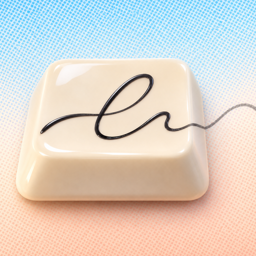
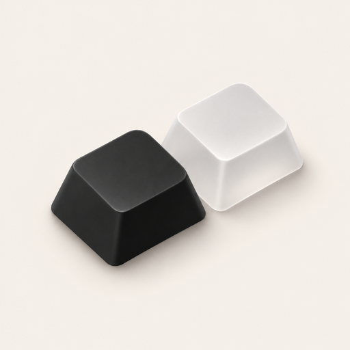
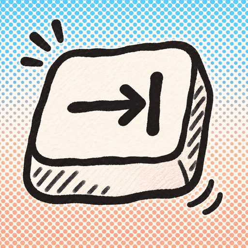
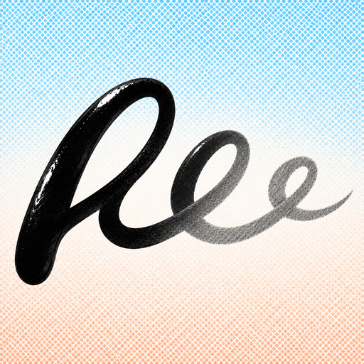
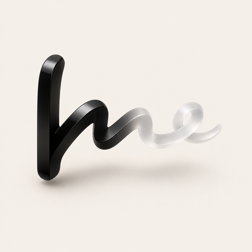
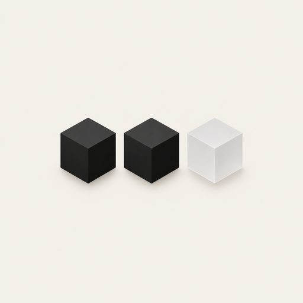
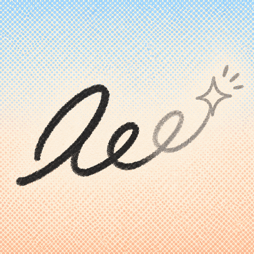
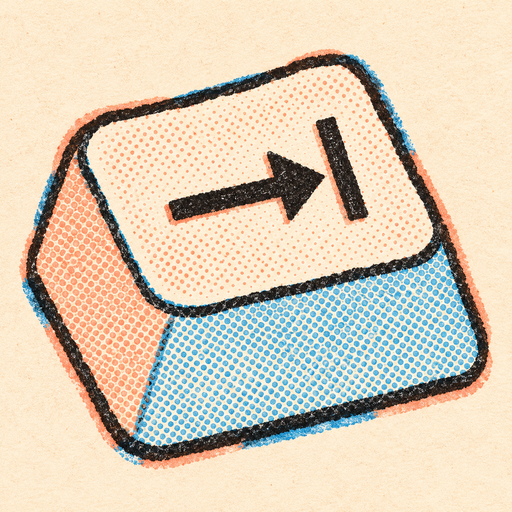

Itda logo, round 4
No caret and line, no name or letters (the app may be renamed). Built from the four you liked, alone and crossed. John: "i really want to move away from the caret and line motif, and i honestly think i'm going to change the name of the app so no need to be hung up on that. If i had to say, 3e, 3h, 3j, and 3l look the best (all different styles, I know)"
What you liked in round 3
3EHand-drawn

Marker doodle on the halftone sky.
3HTab keycap

A glossy physical key.
3JHandwriting

A pen line running into grey cursive.
3LIsometric

Matte black and pale glass, Cursor-simple.
Round 4 (Codex's image tool, the four above as references)
Images, not builds: the pick gets drawn as a vector afterwards.
4AKey with a handwritten flourish

3H × 3J: a glossy key whose top carries a line of cursive that runs off the edge in pencil. Lovely up close, but the key is cropped and off-centre, and the cursive is gone by 32 px.
4BBlack key, glass key

3H × 3L: a matte black keycap and a frosted glass one, the next key. The most minimal and premium; small in the tile, so it needs scaling up.
4CDoodled Tab key

3H × 3E: a wobbly marker key with the tab arrow and little motion marks, as if just pressed. Playful and bold; reads clearly at 32 px.
4DInk into pencil

3J, made bold: a broad calligraphy loop in glossy black ink that turns into grey pencil. Striking and painterly, but it reads as the letters "le".
4EHandwriting as a 3D ribbon

3J × 3L: a cursive loop extruded into a glossy black ribbon turning to glass. Sculptural, but it reads as "me" and sits low and left.
4FThree tiles

3L without the bar chart: two black cubes and a glass one, like letter tiles. Clean but tiny; the idea is clearer in 4B.
4GScribble with a sparkle

3E × 3J: a loose signature that ends in a pencil sparkle. Joyful, but thin at Dock size, and the sparkle says "AI" more than "typing".
4HRisograph key

3E × 3H × 3L in the window's colours: a chunky isometric key, inked by hand, shaded in blue and peach halftone, with slight print misregistration. Recommended.